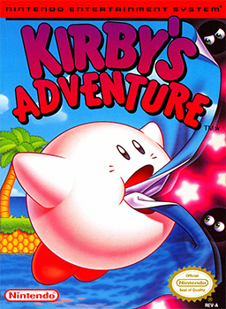

Kirby's Adventure Review
9/2/2014
Kirby's Adventure is an NES classic featuring the lovable pink puffball, Kirby. Combining innovative gameplay with some of the best NES graphics, Kirby's Adventure is definetly a game you will love.
The North American box art
The story is quite simple, the villanous King Dedede has stolen the magical star rod from the Fountain of Dreams, causing everyone to have a dreamless sleep. After discovering this, Kirby set out to recover the seven pieces of the star rod from Dedede and his friends.
The opening scene from the game's remake: Kirby Nightmare in Dream Land
The game is divided into seven levels. Each of these levels acts like a hub where Kirby can access various stages through doors. Clearing one stage unlocks the next door, and occasionally a minigame. Once the boss stage is completed, it becomes a door to the next level.
Vegetable Valley, the first level of the game
The game plays similar to its' predecessor, Kirby's Dream Land, where Kirby can inhale his enemies, dash, fly and swim to get to the stage's end. However, Kirby can now gain a special power by eating cerain enemies, which has become a staple of the series.

Kirby using the sword power
The stage designs are simple, yet charming. Kirby has to climb a spinning tower, board a pirate ship, and even battle through a black and white stage to return the star rod to the Fountain of Dreams. This, combined with a bright, happy soundtrack creates an excellent gaming experience that will leave you amazed you're playing an NES game.

Kirby on a rotating tower in level 3: Butter Building
To conclude, Kirby's Adventure is a must play, especially since you can now get it on the Wii U eshop for $5. Turn it on, and have an adventure!
| Story | 7.5/10 |
| Gameplay | 8/10 |
| Controls | 8/10 |
| Graphics | 8/10 |
| Music | 8/10 |
| Replay | 6.5/10 |
| Overall | 7.5/10 |